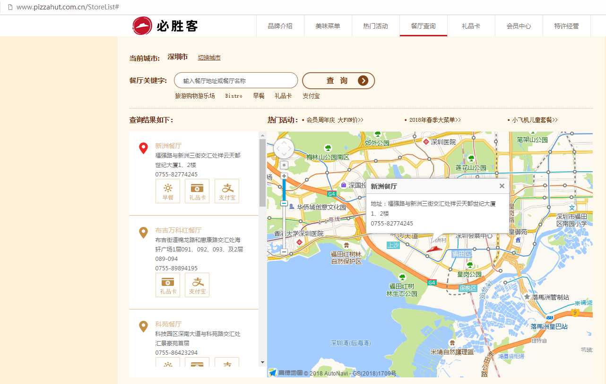
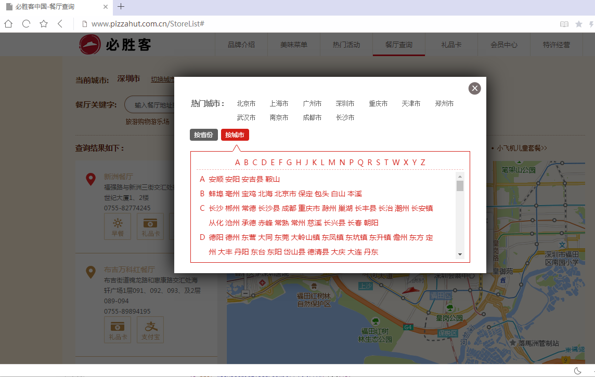
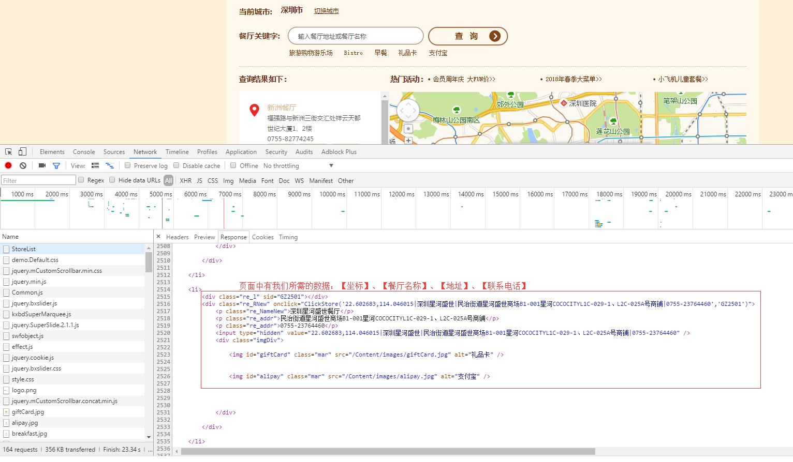
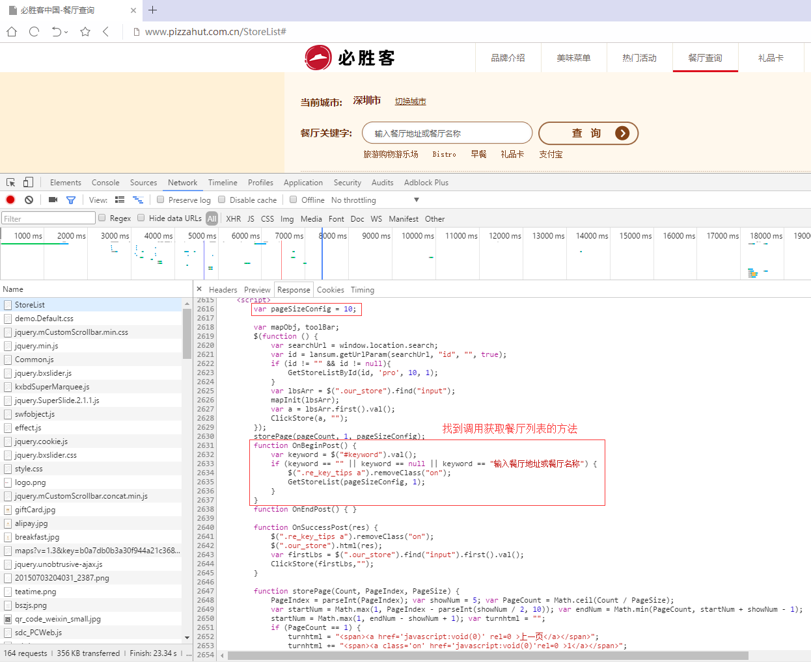
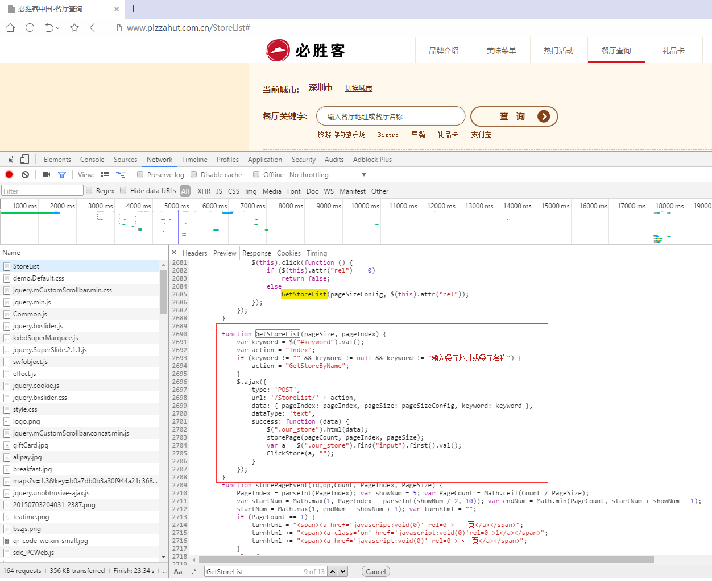
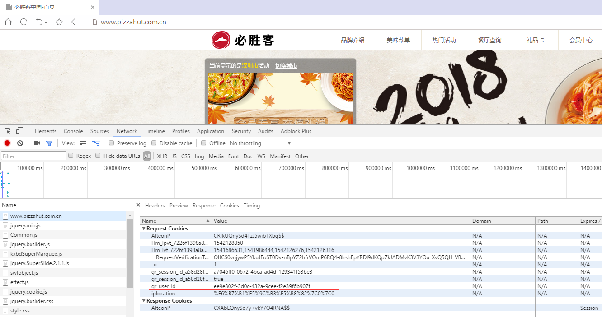
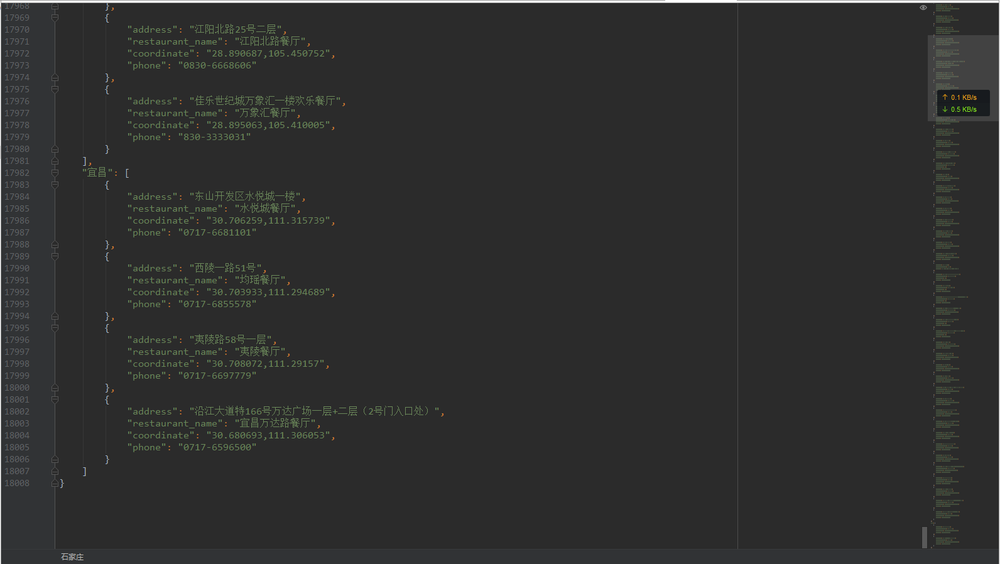

当我刚接触 Python 时，我已经被 Python 深深所吸引。Python 吸引我的地方不仅仅能用其编写网络爬虫，而且能用于数据分析。我能将大量的数据中以图形化方式呈现出来，更加直观的解读数据。
数据分析的前提是有数据可分析。如果没有数据怎么办？一是可以去一些数据网站下载相关的数据，不过数据内容可能不是自己想要的。二是自己爬取一些网站数据。
今天，我就爬取全国各地所有的必胜客餐厅信息，以便后续做数据分析。
1.爬取目标 我们要爬取的目标是必胜客中国。打开必胜客中国首页，进入“餐厅查询”页面。

我们要爬取的数据内容有城市、餐厅名字、餐厅地址以及餐厅联系电话 。因为我看到页面中有地图，所以页面一定有餐厅地址的经纬度。因此，餐厅的经纬度 也是我们需要爬取的数据。
至于全国有必胜客餐厅的城市列表，我们可以通过页面的“切换城市”获取。

2.分析目标页面 在编写爬虫程序之前，我都是先对页面进行简单分析，然后指定爬取思路。而且对页面结构进行分析往往会有一些意想不到的收获。
我们使用浏览器的开发者工具对页面结构进行简单分析。

我们在 StoreList 页面中能找到我们所需的数据。这个能确定数据提取的 Xpath 语法。
StoreList 页面的 Response 内容比较长。我们先不着急关闭页面，往下看看，找找看是否有其他可利用的内容。最后，我们找到调用获取餐厅列表信息的 JavaScript 函数代码。

我们接着搜索下GetStoreList函数，看看浏览器如何获取餐厅列表信息的。

从代码中，我们可以了解到页面使用 Ajax 方式来获取数据。页面以 POST 方式请求地址http://www.pizzahut.com.cn/StoreList/Index。同时，请求还携带参数 pageIndex 和 pageSize 。
3.爬取思路 经过一番页面结构分析之后，我们指定爬取思路。首先，我们先获取城市信息。然后将其作为参数，构建 HTTP 请求访问必胜客服务器来获取当前城市中所有餐厅数据。
为了方便数据爬取，我将所有城市全部写入到 cities.txt 中。等要爬取数据时，我们再从文件中读取城市信息。
爬取思路看起来没有错，但是还是有个难题没有搞定。我们每次打开必胜客的官网，页面每次都会自动定位到我们所在的城市。如果无法破解城市定位问题，我们只能抓取一个城市数据。
于是乎，我们再次浏览首页，看看能不能找到一些可用的信息。最终，我们发现页面的 cookies 中有个 iplocation 字段。

我将其进行 Url 解码，得到 深圳|0|0 这样的信息。
看到这信息，我恍然大悟。原来必胜客网站根据我们的 IP 地址来设置初始城市信息。如果我们能伪造出 iplocation 字段信息，那就可以随便修改城市了。
4.代码实现 第一步是从文件中读取城市信息。
1 2 3 4 5 6 7 8 9 cities = [] def get_cities (): """ 从文件中获取城市 """ file_name = 'cities.txt' with open(file_name, 'r' , encoding='UTF-8-sig' ) as file: for line in file: city = line.replace('\n' , '' ) cities.append(city)
第二步是依次遍历 cities 列表，将每个城市作为参数，构造 Cookies 的 iplocation 字段。
1 2 3 4 5 6 for city in cities: restaurants = get_stores(city, count) results[city] = restaurants count += 1 time.sleep(2 )
然后，我们再以 POST 方式携带 Cookie 去请求必胜客服务器。最后再对返回页面数据进行提取。
1 2 3 4 5 6 7 8 9 10 11 12 13 14 15 16 17 18 19 20 21 22 23 24 25 26 27 28 29 30 31 32 33 34 35 36 37 38 39 40 41 42 43 44 45 46 47 48 49 50 51 52 53 54 55 56 57 58 59 60 61 62 63 def get_stores (city, count ): """ 根据城市获取餐厅信息 """ session = requests.Session() city_urlencode = quote(city + '|0|0' ) cookies = requests.cookies.RequestsCookieJar() headers = { 'User-agent' : 'Mozilla/5.0 (Windows NT 6.3; WOW64) AppleWebKit/537.36 (KHTML, like Gecko) Chrome/55.0.2883.87 UBrowser/6.2.3964.2 Safari/537.36' , 'accept' : 'text/html,application/xhtml+xml,application/xml;q=0.9,image/webp,*/*;q=0.8' , 'Host' : 'www.pizzahut.com.cn' , 'Cache-Control' : 'max-age=0' , 'Connection' : 'keep-alive' , } print('============第' , count, '个城市:' , city, '============' ) resp_from_index = session.get('http://www.pizzahut.com.cn/' , headers=headers) cookies.set('AlteonP' , resp_from_index.cookies['AlteonP' ], domain='www.pizzahut.com.cn' ) cookies.set('iplocation' , city_urlencode, domain='www.pizzahut.com.cn' ) page = 1 restaurants = [] while True : data = { 'pageIndex' : page, 'pageSize' : "50" , } response = session.post('http://www.pizzahut.com.cn/StoreList/Index' , headers=headers, data=data, cookies=cookies) html = etree.HTML(response.text) divs = html.xpath("//div[@class='re_RNew']" ) temp_items = [] for div in divs: item = {} content = div.xpath('./@onclick' )[0 ] content = content.split('(\'' )[1 ].split(')' )[0 ].split('\',\'' )[0 ] if len(content.split('|' )) == 4 : item['coordinate' ] = content.split('|' )[0 ] item['restaurant_name' ] = content.split('|' )[1 ] + '餐厅' item['address' ] = content.split('|' )[2 ] item['phone' ] = content.split('|' )[3 ] else : item['restaurant_name' ] = content.split('|' )[0 ] + '餐厅' item['address' ] = content.split('|' )[1 ] item['phone' ] = content.split('|' )[2 ] print(item) temp_items.append(item) if not temp_items: break restaurants += temp_items page += 1 time.sleep(5 ) return restaurants
第三步是将城市以及城市所有餐厅信息等数据写到 Json 文件中。
1 2 with open('results.json' , 'w' , encoding='UTF-8' ) as file: file.write(json.dumps(results, indent=4 , ensure_ascii=False ))
5.爬取结果 程序运行完之后, 就会在当前目录下生成一个名为「results.json」文件。

6.源码 如果你想获取项目的源码, 点击按钮进行下载。